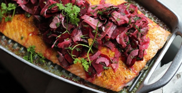
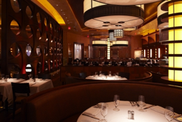

Gila De Lauren
She id an Italian-born American chef,writer,television personality, and the host of the current Food Network television program Food Paradise
Let's get cooking!

Bar Americain's Pickled Shrimp Deviled Eggs with Cornichon Remoulade

Turkey Roulade with "Stovetop"Stufffing

Pasta with Fresh Tomato Sauce
Special of this Season
Barbeque: Cali Style

You've undoubtedly heard of Carolina Barbeque and Texas BBQ but have you ever tried Santa Maria Barbeque? Unlike the aforementioned styles, Santa Maria Barbeque doesn't involve a long, slow cooking method of sweer sauces, but is instead a menu featuring a well-seasoned California tri-tip cooked over native red oak coals on a speial hand-cranked grill, accompanied by pinquinto brans, salsa, green salda, and garlic bread.
The Perfect Fruitcake

The poor, maligned fruit cake... probably one of the most hated caked in the existence of baking. Is it any wonder? would you want an incredibly dense, overly sweet, horribly boozy "cake" chock-full of fluorescent-colored candied fruit pieces?
Spice-Crusted Salmon: A HolidayDinner That's As Impressive As It Is Quick
Holiday season is well underway, and you know what than means: people are BUSY! With that in mind, I developed a festive recipe that's quick enough to serve on a weeknight(with some make-aheads), and beautiful and impressive enoufh to serve as the centerpiece for a holiday meal
DELI BAR

New York, NY 10012
214 677 6400
delibar.com
BAR NEW YORK
New York, NY 10019
214 265 8900
bar-new-york.com
BAR TOKIO SUN
Uncasville, CT 06382
756 862 3529
tokiosun.com
restaurants
Guest Blogging
Rhubarb: The Vegetable That Acts Like a Fruit
May is all about vegetables on bobbyflay.com
and one of the most popular springtime vegetables is rhubarb.
That's right, I said vegetable. Did you know that thubarb is
actually a vegetable, not a fruit?
While rhubarb is typically treated like a fruit and most often
shows up in desserts in this country, it is also very goot in
savory dishes too and when used in glazes and chutneys pairs really
well with pork, lamb and chicken. But, since i could live
on pastries (and often do) i love using rhubarb in a variety
of desserts.
Spice-Crusted Salmon: A Holiday Dinner That's As Impressive As It Is Quick
Holiday season is well underway, and you know what than means: people
are BUSY! With that in mind, I developed a festive recipe that's
quick enough to serve on a weeknight(with some make-aheads), and
beautiful and impressive enoufh to serve as the centerpiece
for a holiday meal.
We love to serve a whole side of fish -- it makes for a gorgeous
presentation and it feeds a crowd. This one has a spice tub that
does double duty, as seasoning for the salmon and as a coating for
spiced nuts that get stirred into fluffu jasmine rice.
A New Favorite Take on an Old Mediterranean Grain

packed with complex carbohydrates and fiber, delicious and hearty whole grains play an important part in the mediterranean diet. Look beyond rice and pasta, becaise it's worth getting to jnow farro, amaranth, millet, freekah and wheat berries...
Some images of this example were taken from http://bobbyflay.com. All reserver rights